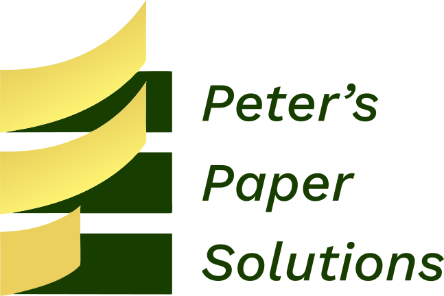

<!DOCTYPE html>
<html lang="en">
<head>
    <meta charset="UTF-8">
    <meta name="viewport" content="width=device-width, initial-scale=1.0">
    <title>¿Quienes Somos? | Peter's Paper Solutions</title>
    <link rel="stylesheet" href="styles/style.css" type="text/css">
    <script src="resources/empresas.js"></script>
    <script src="resources/menu-data.js"></script>
    <link rel="preconnect" href="https://fonts.googleapis.com">
    <link rel="preconnect" href="https://fonts.gstatic.com" crossorigin>
    <link href="https://fonts.googleapis.com/css2?family=Work+Sans:wght@100..900&display=swap" rel="stylesheet">

<script>
var langContent =  {
            "es": `<section>
                        <div class="presentation-about">
                            <div>
                                <span>INNOVACIÓN</span>
                                <span>TECNOLOGÍA</span>
                                <span>OPTIMIZACIÓN</span>
                            </div>
                            <div>
                                
                            </div>
                        </div>
                        <article>
                            <p>Somos una empresa comprometida con la innovación y el progreso de las industrias del papel, cartón corrugado y forestal. Nuestra experiencia acumulada a lo largo de los años nos permite analizar a fondo los procesos de nuestros clientes, ofreciendo asesoramiento especializado que conecta sus necesidades con tecnologías avanzadas de un selecto grupo de proveedores premium.</p>
                            <p>Trabajamos codo a codo con las empresas para implementar soluciones prácticas y eficientes, adaptadas a los estándares más altos de la industria. Este enfoque no solo garantiza mejoras operativas, sino que también ayuda a nuestros clientes a mantenerse competitivos en un mercado en constante evolución.</p>
                            <p>Nuestros servicios abarcan desde auditorías y estudios detallados hasta la instalación de equipos de última generación. Además, ofrecemos asesorías estratégicas que incluyen análisis de rendimiento, optimización de procesos y desarrollo de planes estratégicos personalizados, siempre fomentando el compromiso y la participación activa de las personas.</p>
                            <p>Nuestra misión es ser un aliado confiable y estratégico para nuestros clientes, impulsando su crecimiento y éxito mediante un enfoque integral que combina experiencia, innovación y un profundo entendimiento de sus desafíos.</p>
                            
                        </article>
                    </section>`,
            "en": `<section>
                        <div class="presentation-about">
                            <div>
                                <span>INNOVATION</span>
                                <span>TECHNOLOGY</span>
                                <span>OPTIMIZATION</span>
                            </div>
                            <div>
                                
                            </div>
                        </div>
                        <article>
                            <p>We are a company committed to innovation and progress in the paper, corrugated cardboard, and forestry industries. Our accumulated experience over the years allows us to thoroughly analyze our clients' processes, offering specialized advice that connects their needs with advanced technologies from a select group of premium suppliers.</p>
                            <p>We work side by side with companies to implement practical and efficient solutions, tailored to the highest industry standards. This approach not only ensures operational improvements but also helps our clients remain competitive in a constantly evolving market.</p>
                            <p>Our services range from audits and detailed studies to the installation of state-of-the-art equipment. Additionally, we offer strategic consulting services that include performance analysis, process optimization, and the development of customized strategic plans, always fostering the commitment and active participation of people.</p>
                            <p>Our mission is to be a reliable and strategic partner for our clients, driving their growth and success through a comprehensive approach that combines experience, innovation, and a deep understanding of their challenges.</p>
                        </article>
                    </section>`,
            "pt": `<section>
                        <div class="presentation-about">
                            <div>
                                <span>INOVAÇÃO</span>
                                <span>TECNOLOGIA</span>
                                <span>OTIMIZAÇÃO</span>
                            </div>
                            <div>
                                
                            </div>
                        </div>
                        <article>
                            <p>Somos uma empresa comprometida com a inovação e o progresso nas indústrias de papel, papelão ondulado e florestal. Nossa experiência acumulada ao longo dos anos nos permite analisar minuciosamente os processos de nossos clientes, oferecendo consultoria especializada que conecta suas necessidades a tecnologias avançadas de um seleto grupo de fornecedores premium.</p>
                            <p>Trabalhamos lado a lado com as empresas para implementar soluções práticas e eficientes, adaptadas aos mais altos padrões da indústria. Essa abordagem não apenas garante melhorias operacionais, mas também ajuda nossos clientes a se manterem competitivos em um mercado em constante evolução.</p>
                            <p>Nossos serviços vão desde auditorias e estudos detalhados até a instalação de equipamentos de última geração. Além disso, oferecemos consultoria estratégica que inclui análise de desempenho, otimização de processos e desenvolvimento de planos estratégicos personalizados, sempre promovendo o compromisso e a participação ativa das pessoas.</p>
                            <p>Nossa missão é ser um parceiro confiável e estratégico para nossos clientes, impulsionando seu crescimento e sucesso por meio de uma abordagem abrangente que combina experiência, inovação e um profundo entendimento de seus desafios.</p>
                        </article>
                    </section>`
    }
</script>

</head>
<body>
    <header id="header">
        
    </header>
    <div class="container about-us" id="container">
    

    </div>
    <footer class="footer" id="footer">


    </footer>
    <script src="scripts/script.js"></script>
</body>
</html>